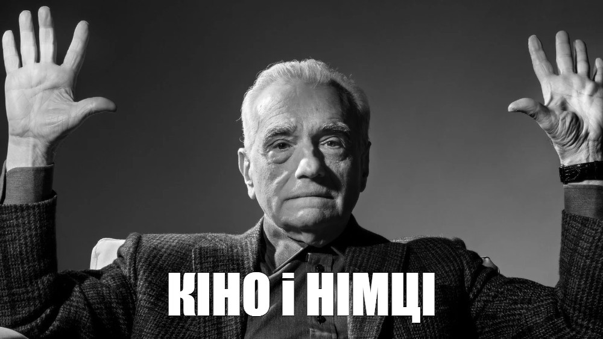

Привіт Світ
Вислів «кіно і німці» використовують для позначення дивної й абсурдної ситуації.
З'явився цей вислів після Другої світової війни у Радянському Союзі. Тоді зняли чимало фільмів про війну, де саме німців показувалися, як недолугих, дурних людей.
У фільмах транслювали, як юні герої фільму нищили німецькі дивізії, отримували розвіддані, визволяли полонених та інші ситуації. Діти ж сприймали це кіно позитивно і на ентузіазмі. Тож, якщо все так легко і німці такі телепні, що їх здатні перемогти й діти – чому так довго тривала війна і чому така висока ціна перемоги – «Нічого не скажеш – «кіно і німці!»